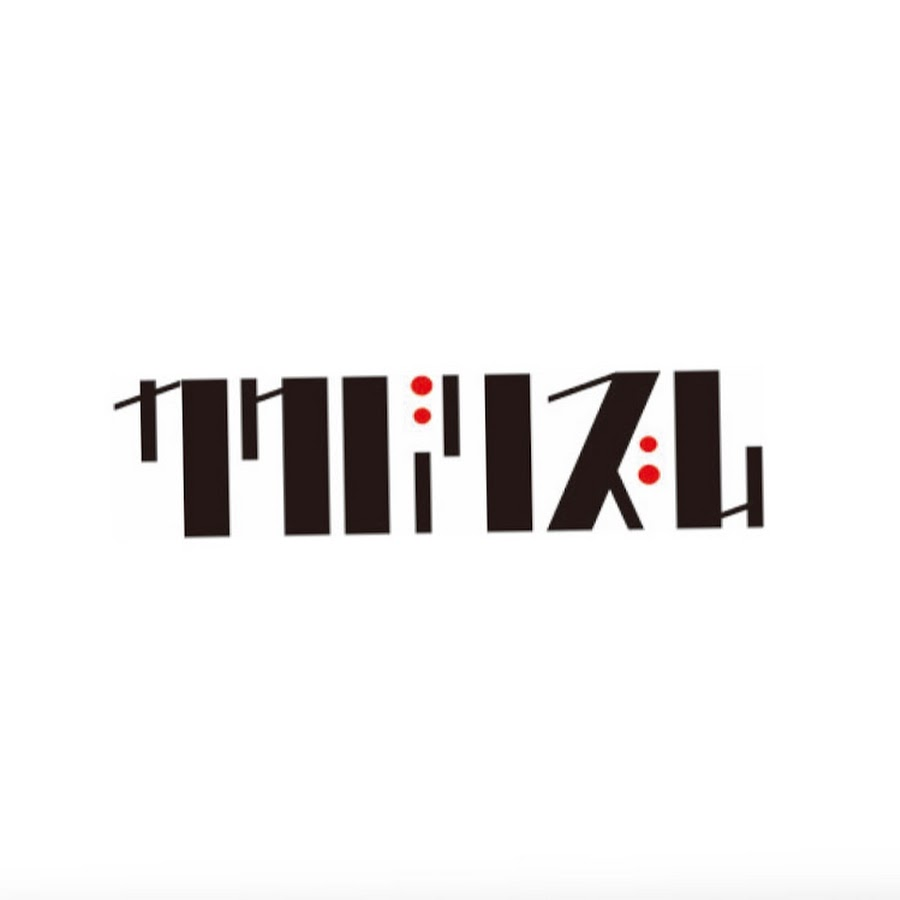

J-POP / INDIE
cero
2026년 10월 10일(토) 오후 7:00 · KT&G 상상마당 홍대 라이브홀확인된 공연 일정
현재 공식 확인된 한국 공연은 1회입니다. 추가 회차나 운영 변경은 연결된 공식 출처에서 다시 확인합니다.
아티스트 소개
2004년 결성된 도쿄의 3인조 밴드로, 멤버 모두가 작곡과 편곡에 참여합니다. 소울, 펑크, 재즈와 전자음악을 섞어 도시와 일상의 장면을 세밀한 리듬과 이야기로 풀어냅니다.
cero 아티스트 페이지 →공연장 교통 안내
서울 홍대 권역의 KT&G 상상마당 건물에 있는 라이브홀입니다. 홍대입구역과 상수역에서 걸어갈 수 있으며, 번호 입장 공연은 집합 시각과 물품 보관·재입장 안내를 예매처 공지에서 확인하세요.
교통편과 출입구는 당일 운영 상황에 따라 달라질 수 있습니다. 출발 전 주최사와 공연장 공지를 다시 확인하세요.
예매 준비 팁
예매 전 YES24 본인인증과 결제수단을 확인하고, 팝업 차단을 해제하세요. 좌석 선택 후 결제 제한 시간이 짧을 수 있습니다.
- 예매 계정의 본인인증과 결제수단을 미리 확인하세요.
- 선예매 대상과 매수 제한, 취소 수수료를 공식 공지에서 확인하세요.
- 공식 예매처 이외의 개인 간 거래는 피해 위험이 있습니다.
공연 당일 체크리스트
- 2026년 10월 10일(토) 오후 7:00 공연입니다. 현장 수령과 입장 대기를 고려해 여유 있게 도착하세요.
- KT&G 상상마당 홍대 라이브홀까지의 이동 경로와 공연 종료 뒤 이용할 교통편을 함께 확인하세요.
- 일반예매 기록은 2026년 8월 3일(월) 오후 12:00입니다. YES24 티켓의 최신 공지를 다시 확인하세요.
- 현재 기록된 선예매 일정이 없습니다. 팬클럽과 주최사 공지를 함께 확인하세요.
대표곡 미리 듣기
Summer Soul, Orphans, Yellow Magus 순서로 들어보면 cero의 음악 색깔을 빠르게 파악할 수 있습니다. 각 곡은 공식 YouTube 영상으로 연결됩니다.
cero 공연을 더 잘 즐기는 법
여일육 작성 · 편집·검증 기준 · 마지막 일정 검증 2026-08-05
이번 공연의 관전 포인트
cero 공연은 한 곡 안에서도 소울, 펑크와 전자음악의 질감이 자연스럽게 교차하고, 세 멤버의 연주가 도시의 한 장면처럼 이어지는 것이 핵심입니다. 보컬 멜로디만 따라가기보다 베이스와 드럼이 만드는 느슨한 그루브, 키보드와 기타가 남기는 작은 소리를 함께 들어보세요. 반복되는 구간도 악기 배치가 조금씩 바뀌어 라이브 편곡을 발견하는 재미가 큽니다.
공연 전에 듣는 순서
'Summer Soul'은 여유 있는 리듬과 계절감 있는 멜로디로 cero의 도시적인 감각을 가장 편하게 만날 수 있는 곡입니다. 'Orphans'에서는 여러 악기와 코러스가 층을 이루는 정교한 팝 편곡을, 'Yellow Magus'에서는 더 강한 리듬과 실험적인 전개를 들어보세요. 세 곡을 이어 들으면 부드러운 멜로디와 복잡한 합주가 공존하는 이유를 빠르게 파악할 수 있습니다.
조회수 높은 대표곡 3곡 입문 순서
- Summer Soul
느슨한 리듬과 계절의 공기를 담은 듯한 멜로디가 cero의 도시적인 감각을 보여줍니다. 보컬 뒤에서 베이스와 건반이 만드는 작은 움직임을 함께 들어보세요.
- Orphans
여러 악기와 코러스가 차례로 겹치면서도 여백을 남기는 팝 편곡이 인상적입니다. 반복될수록 소리가 조금씩 바뀌는 부분을 찾아보면 재미가 큽니다.
- Yellow Magus
강한 리듬과 실험적인 전개가 부드러운 두 곡과 다른 면을 보여줍니다. 기타와 키보드가 짧은 소리를 주고받으며 그루브를 만드는 방식을 들어보세요.
공연장 도착과 귀가 계획
KT&G 상상마당 홍대 라이브홀은 홍대입구역과 상수역에서 걸어갈 수 있지만 주말 저녁에는 주변 보행로가 붐빕니다. 공연별 좌석 또는 스탠딩 운영, 번호별 집합 시각과 재입장 가능 여부를 예매처에서 확인하세요. 입장 전에 화장실과 큰 짐을 해결하고, 종료 후 혼잡을 피하려면 자신의 귀가 노선에 맞춰 두 역과 버스 정류장을 함께 비교해 두는 편이 좋습니다.
공연별 실제 예매 분석
공식 예매처 기준 · 마지막 확인 2026-08-12
- 좌석 등급과 가격
- 전석 스탠딩 77,000원
공식 출처와 검증 기록
마지막 검증일: 2026-08-05 · 이후 공식 발표로 정보가 변경될 수 있습니다.